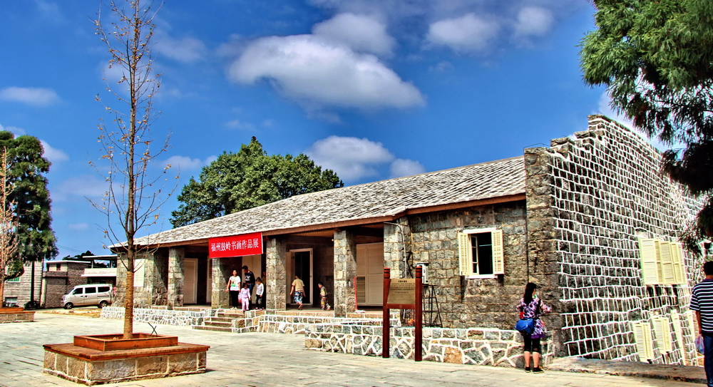
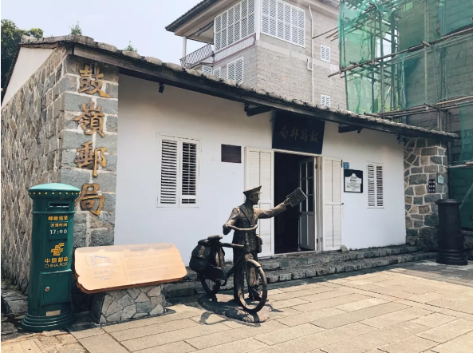
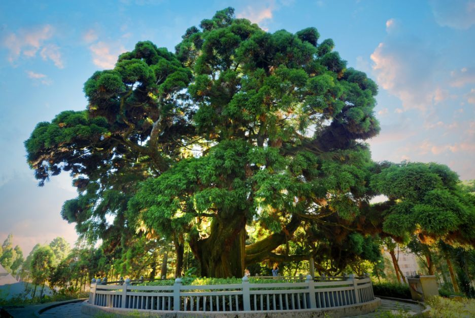
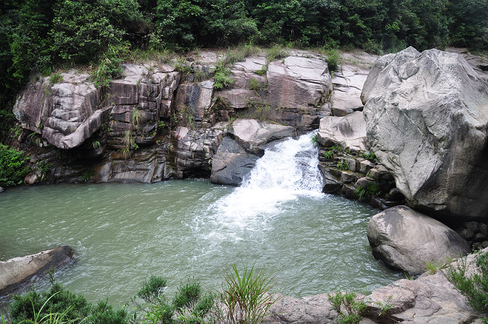
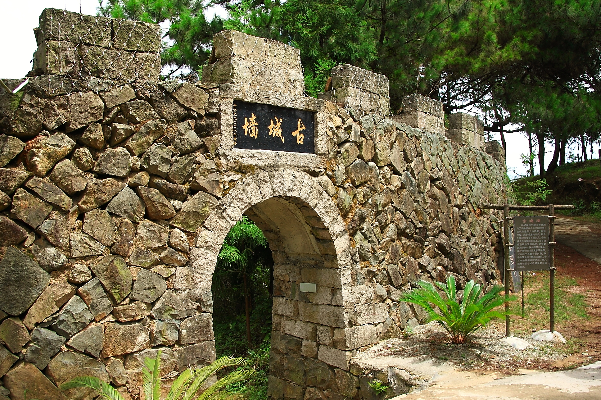
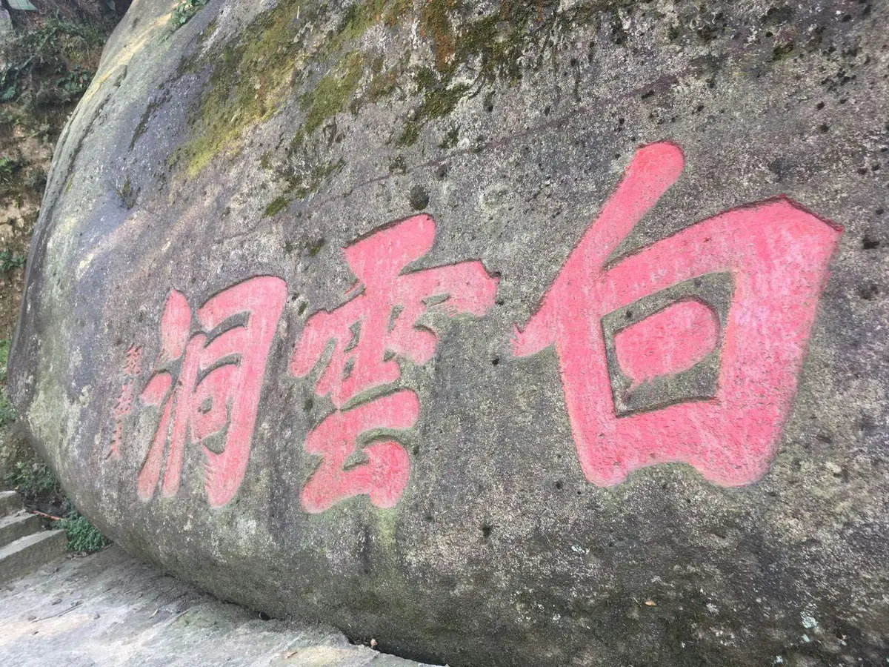
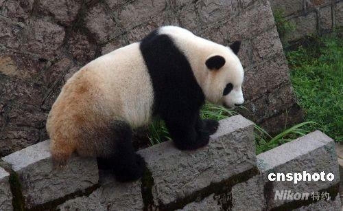
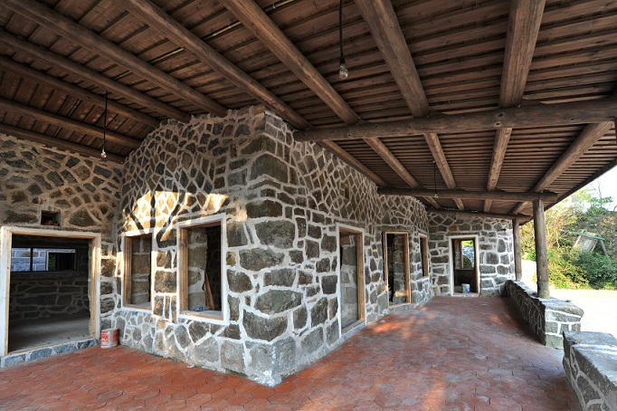

鼓岭文化

宜夏老别墅
鼓岭的老别墅最多时有300多栋，绝大多数都用当地石材建设，墙 体较厚，风格主要是西方近代样式。其中包含有名的“宜夏别墅”。宜夏别墅位于鼓岭宜夏村， 原为华南女子学院设立在鼓岭的医院。在1886年被外国牧师任尼建造到1935年已具有风格 迥异的别墅约366座。也因此获得“左海小庐山”美誉是全国最早的外国人度假村

万国公益社
始建于1895年的万国公益社是鼓岭上颇为有名的历史建 筑，被誉为福州最早的会所。石屋的墙体用青、黑、白等不同颜色的石头砌成， 处处透露着波希米亚风。经过简单装修后，这座石屋如今已成为一个老人会馆， 供老年人在这里娱乐。其中万国公益社内设歌舞厅、化妆室、更衣室等，设备完善。 万国公益社之前是专供洋人们举办宴会、舞会、演讲等娱乐活动，但20世纪50年代， 外国人陆续回国，万国公益社就变得冷清了。万国公益社后曾建有七个网球场，也已荒废，变成了菜园。

鼓岭邮局
鼓岭邮局开办于1902年，每年在端午节后开张，农历八月十五后关闭，属于季节性 邮局，主要为夏季到鼓岭避暑的中外人士服务。是中国早期五大著名的“夏季邮局”之一，它的出现极大搭建 中外信息发展源。当年邮局旁的有一口古井，井圈外壁上的刻有字迹，到至今还能看出“外国、本地、公用”六个阴刻的字。

柳杉王以及柳杉王公园
柳杉王公园1988年5月修建，位于宜夏村中心梁厝后门山，占地80亩。据描述柳杉王公园 只因一株高30米、径围约10米、直径3．2米的“柳杉王”而得名。据史料记载这棵大树已有1300多年的历史。目 前为福建省海拔最高的山地公园。公园小径两边翠竹清丽，当风潇洒。径旁是涓涓小溪，逸出流动的凉意。小径 通向“揽翠亭”。揽翠亭有联：倚仗闲吟松风万壑；凭栏远眺灯火三山。据说 ，过去从鼓岭西望，蜿蜒流淌、千折百回的内河把城区“写”得像个草书的“福”字。

石柱山
石柱山包含柱里水库、观日台和凤仙洞。从鼓岭宜夏村，柳杉王公园右侧水泥路上 山，经水池和林间小路到石柱山新开辟的景点。这里有一块突起的巨石称“观日台”，可观赏石柱山全景。而石柱 山有个观日台，日台上压一块龟头状的风动石，石上镌刻一个缘字。在此观山景，远处山水尽收眼底。石柱山有一 容量高达2万立方米左右的水库，位于柱里国际会议中心旁，每当天气晴好之时，可约三五好友，闲来一钓，纵享渔 翁之乐。在石柱山腰有一洞楷书名“风仙洞”，洞内分为门前洞和左洞、右洞三部分。山洞位 于风口，经常伴随风在洞里流蜜，呜呜作响，别有趣味。

南洋溪
南洋溪含有南洋溪瀑布深潭和南洋庄上镜，其中南洋溪瀑布深潭全长5000米，最宽处 达50多米，位于鼓岭东北部，起于北捷坂，流入间江。南洋溪含有多个深和多梯级瀑布，溪谷两旁，草木蔚秀 ，溪水清澈见底。在在鼓岭南洋村大殿神龛正中供奉间越王郢第三子白马三郎及其夫人，左侧则供柳、王、马三 元帅,右侧供临水夫人。其中有一个石笋土而出高1.64米，被乡民称之为“蛇角”。

牛头寨
牛头寨含有古城墙、小姐洞、牛头崖和梅花园。古城墙位于鼓之北，山头上有一座古城墙 ，已有400年历史，从古城墙旁一条石阶古道可通至南洋村。小姐洞头寨东侧山若中下两洞，洞在南洋公路上侧3 0多米，下洞在公路下侧20多米处，深不可测。牛头崖因上一块酷似牛头的“牛头石”而得名。传说古代有牛成精， 到福州地方吃尽了田间秧苗，致使农民稻谷无收，饿死许多人，惹怒玉皇大帝，因此派雷神下界除害只见电闪雷鸣 、万丈火光，牛精被炸掉了牛角、耳朵，全部化为一块石头，面向受遭殃土地，常年谢罪。梅花园位于王暦山，占 地300亩因其有梅花1W余株，十几个名贵品种，百年古梅就有近50株而得名。

凤池景区
凤池景区包含古灵禅寺、石鼓岩、观音掌、风洞石和白云洞五大景点。其中古灵神寺位于凤池山浴凤池旁，又 名凤池庵、浴池庵或白云神庵。年代已久，历代名人喜以题颂之地。石鼓岩因其形似鼓，露出部分高地面160厘米，腹径140厘米， 正面镌字，楷书。观音掌位于凤池山公路边，因一块巨石形似手掌而得名。风洞石位于白云洞上侧。一块形式头部石头夏立于一巨 岩之上，每有大风吹拂其石会来回見动，若用力一推，其石也会見动。故岩壁上镌刻:“风动栖鹘”四字。白云洞位于涌泉寺西北凤 池山西侧的悬陡壁，是一个“倚为屋,石天为盖”的人工岩洞，又因岩洞位于海拔686.3米处，“白云混入,咫尺英辦”，故称白云洞。

熊猫山庄
熊猫山庄因为海拔高，气候凉爽，而且有成片的箭竹林供大熊猫们采食，因此每年7月至9月，福州大熊猫 研究交流中心都会把部分饲养在福州熊猫世界的大熊猫送往鼓岭的熊猫山庄避暑。因此属于是福州大熊猫的避暑圣地。

鼓岭老街